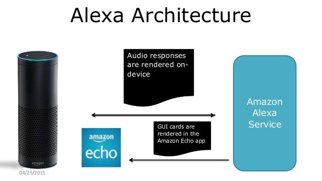
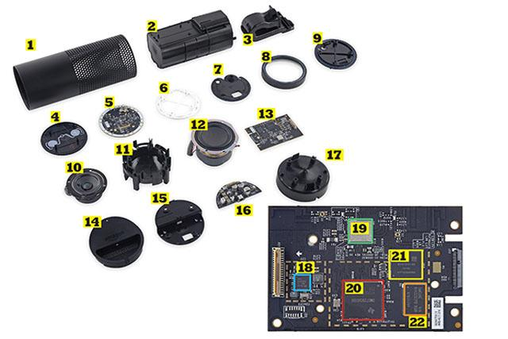
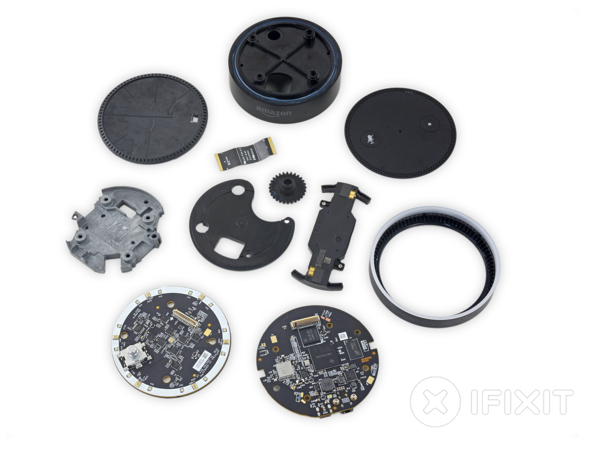

Alexa Workshop
Learn how to build Alexa Skills with Groovy and Grails
Created by Ryan Vanderwerf / @RyanVanderwerf - OCI ...and Lee Fox @FoxInATX
About Ryan
- Software Engineer on Grails team at OCI (New home to Grails)
- Father of 2 girls under 12
- Co-Chair Austin Groovy and Grails User Group
- Co-Author of Effective Gradle Implementation Video Series on Packt
- I like to modify all the things (cars, home automation, phones, gadgets)
- Into lots of Devops/Linux stuff and AWS
About Lee
- Cloud Architect/Operations Manager at Starmount
- Father of 2 boys under 13
- Presenter at Agile Austin
- Co-Author of Effective Gradle Implementation Video Series on Packt
- Master of all things AWS and Devops
What we will cover today
- What is Alexa and what devices it covers
- How does Alexa work?
- Alexa software concepts and components
- Brief Lamba Overview
- Lamba Groovy App Setup
- Twitter app for Groovy and Lambda
- Superhero quiz for Groovy and Lamba
- Let's do more.. like account linking!
- Twitter app for Grails using OAuth, Spring Security
- Alexa Skills Plugin
Workshop - Order of things today
- Break up into groups
- Get our credentials distributed to teams
- Build our first Lambda Skill in Groovy(Guided)
- Advanced Groovy Lamba Skill + breakout
- Break
- Grails Plugin Overview
- Build our first Grails Skill (Guided)
- Let's do more.. like account linking with Grails! (breakout)
- Wrap-up
What is Alexa?

Alexa is a cloud based voice recognition service
There are 3 SDKS - Skills, AVS, and Home API
The Devices

ECHO
Echo

ECHO
Echo

- The first one
- Multi dimensional mic array
- Nice speaker with downfiring subwoofer
- Some simple home automation ability
- Wifi and Bluetooth capabilities
- Aways on listening for wake word (Alexa or Amazon)
Dot

-
- Baby brother - has the fancy mics but minimal speaker for voice
- Has Wifi and bluetooth capabilities
- The big deal: a 3.5mm audio output jack!
- Aways on listening for wake word (Alexa or Amazon)
Dot
Tap

Tap
- On the go - portable bluetooth speaker with battery and simple mic
- Has Wifi and bluetooth capabilities
- The big deal: a 3.5mm audio output jack!
- Not always listening - have to 'tap' button to wake
FireTV
- Available as a 'stick' or box with voice remote
- Mostly meant for TV apps - cheapest option for Alexa
- Recent OS updates support Alexa on both V1 and V2
- Must push voice remote button to start apps
- The same skills work here too!
Yes, There are others - Google Chirp
- Not yet released Google version of Echo
Yes, There are others - MyCroft
- Open source/hardware version
- Built on Raspberry Pi - all open
- Can buy on Kickstarer and Indiegogo
Yes, There are others - Make your own Echo!

- Some examples:
- Github repo: http://bit.ly/1PrOq6A
- Official DIY: http://bit.ly/1OMpfwP
- Video guide: http://bit.ly/1WRZO5u
Back to Alexa Skills - how does it work?

- App developer never talks directly to device
- Device must initiate interaction
- Alexa server response with JSON body
- Currently text to speech or small sounds clips (90s low quality)
- Run as Lamba function or separate webapp
SDKs

- Skills SDK - custom skill or Home
- Voice SDK - build a device like and Echo
- We'll focus on the Skills API today
Skills SDK - Don't Call Us, We'll Call You
- We host this as a web service that parses JSON requests
- Responds in kind with JSON
- Alexa Java speechlet SDK gets us mostly there
Skills SDK - Speechlet SDK
- Does some things for us like validate the request and call events
- Gives us decent classes that use an API form SpeechResponses
- Also helps us build Card responses
- Let's dig in to the specifics!
Skills SDK - Intent Schema

- This tells Alexa what actions your app can do
- Describes intents and slots used
- When you upload this, Alexa calculates speech variations to launch them
- See sample IntentSchema.json
Skills SDK - Slots

- This is how Alexa parametrizes commands
- Very simple list of options
- Slots don't work well for multi-word responses it seems
Skills SDK - Sample Utterances

- Train Alexa on what the commands it will understand
- This is the phrases that activate the intents
- Use {} and | to use parameters
- When you upload this, Alexa calculates speech variations to launch Intents
The Alexa App

- This is where you can do non-speech interactions
- See a log of what you've done
- Install Skills
- Can use mobile app or go to echo.amazon.com
Skills SDK - Cards

- This is similar to Android cards
- You can launch different cards for different intents
- There are 3 main cards: Simple, Standard, and LinkAccount
- Amazon limits what kind of content can be on each type of card
Skills SDK - Speechlet - Open App
- Uses special keywords: Open, Ask/About, Get/From, Give/From, Want/To/
- Full list of invocation commands at http://amzn.to/1NpPlZo
Skills SDK - Intents

- Uses concept of Intents to trigger bits of your code
- Intents are: onSessionStarted, onLaunch, onIntent, onSessionEnded
- The only intent you -have- to override is 'onIntent'
Skills SDK - onSessionStarted
- This is called first
- This passes in Session and SessionStartedRequest objects
- Use this to do any session setup stuff you want similar to Session listener in Servlets
- This is optional - don't have to override
Skills SDK - onLaunch
- This is called second
- This passes in Session and LaunchRequest objects
- Use this to do any app setup stuff you want similar to Session listener in Servlets
- In this case, we load the twitter credentials for the user
- This is optional - don't have to override
Skills SDK - onIntent
- This is the meat
- Once Alexa figures out what intent the user asked for, launches this
- See the sample IntenSchema.json
- In this case, we load the twitter credentials for the user
- This is NOT optional - you must override
- It is considered best practice to support a 'HelpIntent' with a menu
Skills SDK - onSessionEnded
- This is the last intent called when done
- Put session cleanup code there
- This is optional - don't have to override
Let's Make a Groovy Lambda Skill!
- This is the last intent called when done
- Put session cleanup code there
- This is optional - don't have to override
That's cool, but can it only to text to speech?
- Nope! We can use SSML to play sounds clips!
- Limited to 90s, 48kbit SSL hosted mp3 only
- Very picky about formats and unhelpful error messages
- Can do other commands like pronounce words
- Let's check out the SSML Reference here
Audio Protip
Use ffmpeg to resample your mp3 so amazon likes it (s3 is easiest).
ffmpeg -y -i
SSML Markup
Audio SSML Example
SSML Markup
Pronounce SSML Example
Here is a number spoken as a cardinal number:
12345 .
Here is the same number with each digit spoken separately:
12345 .
Here is a word spelled out: hello
Complete SSML reference http://amzn.to/1OaLmAZ
Testing - couple options
- Using the developer.amazon.com test tab
- *NEW* Use echosim.io browser tester!
Yeah It's Not Perfect
- Not multi-language yet
- May have troubles with strong accents
- Currently meant for NA
Superhero Quiz App
- Uses Groovy Lambdas and DynamoDB
- Asks you superhero trivia
- Let's try it out!
Demo - Groovy Lambda Superhero Quiz
Twitter Lambda App
- Uses Groovy, Lambda, and Spring Social
- Lambda version uses hard-coded credentials
- Let's try it out!
- Code at https://github.com/rvanderwerf/alexa-twitter-groovy
Demo - Groovy Lambda Twitter Search
Let's do more advanced stuff!
- How can I make the app use MY twitter credentials?
- How do does Grails fit into this?
- Let's talk about account linking then take a look
Account Linking
- There are rules
- How do does Grails fit into this?
- Let's talk about account linking then take a look
Account Linking
- Uses OAuth
- Supports Implicit or Authorization code
- Use an Intent to send an AccountLinkCard
- Docs at http://amzn.to/1OQWqkq
Setting up your own server
- Must use SSL and be accessible to Alexa via internet
- You can use self-signed certs in dev only
- Self signed certs MUST have hostname match common name
- Trusted certs support most cert providers
- Docs at http://amzn.to/1OQWqkq
Grails Twitter Search
- Uses OAuth, Groovy, Grails, and Spring Social
- Supports OAUTH to authenicate a user
- Uses Spring Security UI to register accounts
- Provides Admin UI to manage users and credentials
- Code at https://github.com/rvanderwerf/twitterAuth
Demo - Grails Twitter Search
Source Links
- Grails 3 Plugin: https://github.com/rvanderwerf/grails-alexa-skills or http://grails.org/plugins.html#plugin/alexa-skills
- Twitter AWS Groovy Lambda App: https://github.com/rvanderwerf/alexa-twitter-groovy
- Twitter Grails 3 App: https://github.com/rvanderwerf/twitterAuth
- Hero Quiz Groovy Lambda App: https://github.com/rvanderwerf/heroQuiz
- Run Skills in Browser: http://echosim.io
- Amazon Developer Portal to register Skills: https://developer.amazon.com
Special Thanks
- Lee Fox for his help writing the code and figuring this stuff out
- Bendoit Benoit Hédiard for his awesome Groovy Lamba code sample from GGX
THE END 
I hope you have enjoyed the session!
Free free to contact me on twitter or google+ @RyanVanderwerf or email rvanderwerf@gmail.com or Lee Fox @FoxInATX or lee.h.fox@gmail.com